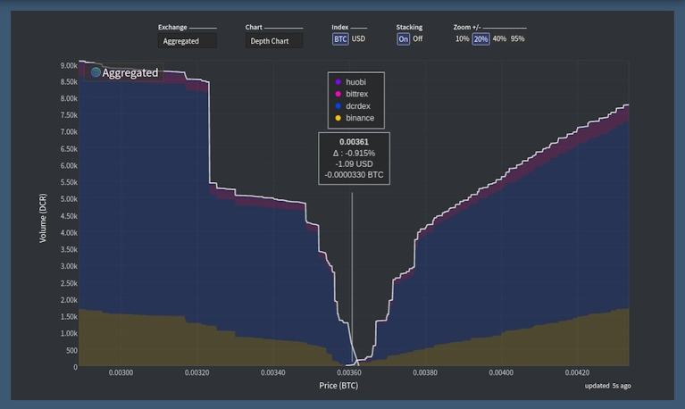

Decred月报 – 2021年6月
图片:@saender
六月重点：
- Politeia 批准了即将进行的共识升级，这将使未来的共识变更更容易、更可靠和更安全。
- 国库支出检查施加的限额太低，这将需要共识升级才能修复。
- 三项 Politeia 提案以高投票率 (~47%) 和高赞成票 (97-99%) 获得批准 - 漏洞赏金、翻译和显式版本升级共识更改。
- PoW 算力显著下降，可能与中国对挖矿的打击有关。
内容：
新国库漏洞
由于国库支出的一个bug，新国库的付款被阻止了几个月。5月22日的测试国库支出交易触发了安全机制中的一个被忽视的条件，该机制可防止在短时间内花费过多的 DCR。在接下来的几个月里，只能从新的国库中花费大约 0.15 DCR，这太低了，无法支付承包商。
网络中的所有资金都是安全的，承包商的付款将继续从旧国库中支付。修复安全算法需要另一个正在开发中的共识更改。
阅读来自@matheusd和@lukebp的博客文章和 Twitter 记录的bug发现过程。
附带说明，这个事件提醒我们，即使经过大量审查和测试的共识代码也不能免受bug的影响，但是当存在明确定义且无争议的升级过程时，bug更容易修复。
开发进展总结
除非另有说明，否则此处报告的工作仅限为“合并到主核心存储库”状态。这意味着这项工作已经完成、审查并集成到高级用户可以构建和运行的源代码中，但对于普通用户来说，还不能使用。
处理标准脚本的方式已经过重新设计，以解决几个长期存在的问题。
对于quick background，本](https://devdocs.decred.org/developer-guides/transactions/txscript/overview/)"是存储在交易中的小命令，它们消耗来自过去交易的“输入”硬币并为接收者创建新的“输出”硬币。“标准脚本”是共识允许的所有脚本的子集，涵盖最有用的操作（发送资金、抵押、多重签名等），并针对效率和网络安全进行了优化。主网节点通常会拒绝接受和中继包含非标准脚本的独立交易（那些不属于区块的交易）。
reworked code添加了一个新的包叫做stdscript支持不同的脚本版本（这是很难先前支持并需要为下一个共识升级），为开发人员提供（包括multisig和原子交换佣工）更加人性化的API之间提高分离“标准”和“共识”（新开发人员的常见混淆点）。此外，进一步收紧了哪些脚本被视为“标准”脚本的政策，以帮助确保典型脚本占用更少的链上空间并进一步限制没有意义的情况。
像往常一样，这个巨大的变化来自一系列易于理解的提交，其中包含信息丰富的描述、测试、基准测试、示例，更多细节请查看这里。
许多其它更改都集中在从共识代码中删除标准代码的使用上，因为被视为“标准”的政策可能随时更改而无需共识更改，因此共识代码不得受到影响。
一个提案已经提交并获得批准。此次升级实际上将禁止软分叉，以简化未来的共识变更并提高安全性。一旦激活，全节点将开始拒绝他们不理解的新版本的交易和脚本，而不是忽略它们并相信它们仍然完全验证了链。
软分叉是能力较弱系统的产物，这些系统具有技术缺陷并且缺乏无争议的正式治理流程 (@davecgh)
由于 Decred 拥有正式的治理流程及其高度参与的社区，进一步脱离软分叉是可能的。
- 随机拒绝区块的选项（用于测试，不能在主网上使用）
- 更新到最新的dcrd模块，包括新的
stdaddr - 删除了当私钥不可用时投票或撤销的尝试（防止一些购票错误）
- 自动购票时使用多个连接（如果资金账户的UTXO有限，可能会导致混合速度变慢）
面向用户：
- 将DEX选项卡灰化并显示工具提示，而不是在 SPV 模式下将其隐藏（很多人对此感到困惑）
- 添加了用于恢复钱包的高级选项（禁用硬币类型升级和设置间隙限制）
- 允许空密码短语支持 Trezor密码短语功能
- 允许在Trezor输入密码，而不是要求它在Decrediton（仅限T型）
- 为治理视图实现了新的 UI 设计（提案和共识变更）
- 来自pi-ui库的集成文本输入组件。为了支持 Decrediton 的设计规范，它更新了其他基于 React 的项目现在也可以使用的新功能。
- ~10 bug 修复
面向开发人员的更改包括完成了几项酝酿已久的安全改进：
- 发送, 接受和导出视图的自动化测试
- 重新组织、清理和优化Webpack配置
- 在 UI 代码中禁用节点集成，使其无法再直接访问低级节点和API。这是一项重要的安全功能，也是现代 Electron 应用程序开发中的推荐做法。
- 在主窗口中启用上下文隔离 - 另一个重要的安全功能进一步限制了 UI 代码
- 启用了
webSecurity收紧外部请求的功能（这也修复了 Windows 上的开发模式） - 减少依赖，减少对第三方代码的依赖，并通过减少可能的供应链攻击面来提高安全性
- 引入了更安全的确认对话框，并将其用于确认VSP访问和交易签名
面向用户：
- 添加了一个按钮来访问原始Markdown
- 在用户查看时显示横幅
proposals-archive.decred.org以减少单击站点徽标时的混淆 - 改进了平面模式按钮的外观
- 向电子邮件主题添加了提案名称
- ~13 bug 修复
后端和 CLI：
politeiavoter升级到 v1.0.0发布的新 APIpoliteiavoter现在将重试对服务器错误的投票- 添加了用户数据库的MySQL实现。数据需要从 CockroachDB 迁移以消除这种依赖性，并且只有一个数据库需要处理。MySQL 的选择由tlog（不支持 PostgreSQL）决定。
- 更新了带有设置说明的自述文件，以启动并运行完整的 Politeia 实例（新贡献者，不要再等了！）
- 添加缺少关于
pictl和politeiaverify工具的文档 - 更有意义的堆栈跟踪
- 用户管理和获取的测试覆盖率
- ~2 bug 修复
承包商管理系统（CMS）：
@lukebp 分享了一个很好的教育介绍，介绍了 Politea 如何实现其强大的加密可审计性。
面向用户：
- 在主页和状态 API 响应中添加了VSP 的现场选票份额及其撤销百分比
- 允许管理员设置自定义消息，当 VSP 关闭时，该消息将显示在网页上并由状态 API 返回
- 管理页面UI调整
- 改进缓存破坏（防止用户看到过时的资源）
内部：
从v1.2.0到V1.1.0几乎经历整整一年的开发。查看发行说明中的所有修复和改进。
合并在 master 和 v1.2.0 版本中：
- 重新设计存币地址确认跟踪以解决剩余问题
- 更准确的订单状态报告
- 在自述文件中添加了交易费用概述
- 改进的匹配验证
- 单独存储存档订单以加快活动订单的处理速度
- 验证脚本版本（对 dcrd 1.6 和 1.7 使用不同的方法）并准备处理不同的脚本版本（向后移植的v0.2 分支）
合并到dcrlibwallet（Android/iOS 应用程序和 Godcr 的基础库）：
- 将更改发送到未混合帐户的选项（在使用前混合），并在“发送”页面上指明更改将发送到哪个帐户
- 在同步、重新扫描或混合时防止屏幕休眠
- 钱包列表上更灵活的下拉菜单
- 用独特的标签和图标区分混币
- 用户界面调整
-
~7 bug 修复
面向用户：
- 实现的视图：选票活动、 统计、提案投票模式、钱包加载时显示的 起始页面
- 添加了选票的解释工具提示
- 允许转到上一页
- 在交易的输入和输出上显示帐户名称
- 拉伸窗口时限制内容宽度
- 许多bug修复和用户界面调整
开发者：
- 提取页面, 模式, 通知, 和帐户选择器的可重用代码（以及重构和清理）
- 重构以改进dcrlibwallet的使用
- 用每个页面的本地实例替换全局子页面按钮（修复页面相互干扰）
- 实施了来自 Elias Naur（Gio UI 库的创建者）的更多建议
Godcr 即将进入公开测试阶段。期待预发布版本。

- 添加了swapscan工具，用于扫描 Decred 和比特币区块链以进行交换交易并输出 CSV 文件
- 从图表页面中删除了内联javascript
- 为可能包含用户输入的任何内容添加了严格的HTML转义
- 删除了对axios的依赖，以便从 UI 代码发出请求
- 与 Bittrex 的固定连接
其它:
-
Decred的Trezor T型staking的支持是在固件合并发布2.4.0。Decrediton 需要更多的工作，但这是一个重要的里程碑。
-
@fst_nml宣布了$100K奖金为建设Decred与THORChain整合 -基于Tendermint，宇宙分散的交链流动性协议，并利用门限签名方案。开发已经在进行中(讨论)。
人员
欢迎到来首次贡献者，他们的代码已合并到主存储库中： @vibros68 (politeiagui) 和 @x-walker-x (politeiagui)!
截至 7 月 1 日的社区统计数据：
- Twitter 粉丝: 46,919 (+1,195)
- Reddit 订阅: 11,322 (+132)
- Matrix #general 用户: 501 (+34)
- Discord 用户: 1,933 (+146)
- Telegram 用户: 2,733 (+28)
- YouTube 订阅: 4,570 (+30), 观看: 188K (+2K)
- GitHub dcrd 星: 601 (+3), 叉: 256 (+1)
可以在此处找到六月的社交媒体动态的回顾。=
治理
6 月，新国库收到了价值 140 万美元的 10,510 DCR，6 月平均利率为 131.52 美元。1,460 DCR 用于支付承包商的费用（来自旧的财务地址），按 6 月份的费率计算价值 192,000 美元，或按 5 月份的费率 173.47 美元计算，价值 253,000 美元。截至 7 月 2 日，旧国库和新国库的总余额为 692,988 DCR（9,140 万美元，合 131.88 美元）。
由于前面描述的bug，新国库的第一笔真实交易没有被挖掘，而是从遗留交易中支付给承包商。尽管它没有按计划进行，但该交易显示出链上选民的高度参与和对当前资金管理的高度支持：在最大可能的 17,280 票中，有 11,943 票投赞成票，零票投反对票 - 投票率为 69%。当 VSP 用户（目前持有约 20% 的现场票）实施 TSPEND 投票时，它可能会更高。
Politeia 上发布了三项提案，并且这三项提案都获得了很高的支持率。
-
在Explicit Version Upgrades Consensus Change提案中99.9％赞成票获得新的批准里程碑，只有13票对47％的投票率中的建议投票。
-
Bug Bounty第4阶段提案以 98.5% 的赞成票和 47% 的投票率获得批准。与第 3 阶段相比，这是 +0.5% 的赞成票和 +15% 的投票率。@degeri感谢利益相关者不断增加的信心和信任。
-
翻译提案的第二阶段以 97.3% 的批准率和 46% 的投票率获得批准 - 支持率比第一阶段提案的75% 赞同和 28% 参投率大幅增加。
有关本月提案的更多详细信息，请参阅 Politeia Digest 第43期。
网络
全网算力: 6月份算力以~369 Ph/s开启，结束为~73 Ph/s，全月最低为61 Ph/s，最高为438 Ph/s。
正如您在上面看到的，由于最近的禁令，矿工迁出中国，6 月份的哈希率大幅下降。这在像 Decred 和 Bitcoin这样的 ASIC 开采硬币中尤其明显。
7 月 1 日矿池报告的算力分布：币印矿池 37%，F2Pool 28%，蚂蚁矿池 8%，卢克索 5%，BTC.com 5%，火币矿池 1%，UUPool 0.2%，CoinMine 0.1%。
1,000 个实际开采的区块的分布几乎与报告的算力相符。身份不明的15％开采块相同的4个地址之间的分裂如先前。
Staking: 选票价格在168-208 DCR之间变化, 30天的平均在184.7 DCR.
锁定量为7.33-7.72百万DCR，这意味着循环供应的56.1-59％参加在购票。
VSP: 在 7 月 1 日，~8,000 (-200) 个现场票由 vspd 服务器管理，~600 (-500) 个由列出的旧 dcrstakepool 服务器管理。12 个旧版 VSP 和 13 个新版 VSP 总共管理着 20.9% 的门票池，低于 6 月 1 日的 22.7%。已退市但仍然活跃的旧版 VSP 管理着 26 个现场门票 (-35)。
节点: 根据dcrextdata，整个 6 月大约有 216 个可访问节点。
截至 7 月 1 日 快照的节点版本（共 256 个，仅 dcrd）：v1.6.2 - 53%、v1.6.0 - 19%、v1.6.1 - 13%、v1.7 dev builds - 7%、v1.6 dev builds - 3%，v1.5.1 - 2.8%，v1.5.2 - 2%。
混币的份额在 43.7-47.0% 之间变化，并创下历史新高。
截至7 月 1 日，Decred 的闪电网络已拥有 34 个节点 (+1)、60 个通道 (+7)，总容量为 21.8 DCR (+4.7)。
生态系统
stakey.net已删除其旧版 dcrstakepool 实例的 Web 界面。投票钱包和 API 将被维护，直到用户迁移到 vspd。截至 7 月 1 日，stakey.net 的旧版 VSP 管理了 63 个现场票，低于 6 月 1 日的 134 个。其vspd实例已成为最大，管理超过 2,200 个现场票。
为了保持分散，建议避免控制过多选票的服务商。但是，stakey.net 在这里提出了一个“问题”，因为它是唯一已知的提供 Tor 隐藏服务的 VSP。欢迎其他供应商参加比赛！
dcr.farm 现在重定向到其vspd实例，但@infertux确认其旧钱包已启动，并将一直保持到所有票数投票为止（截至 6 月 22 日，仍有 32 个仍处于活动状态）。可以在专用状态页面上查看 dcr.farm 的遗留和 vspd 钱包的状态。
YieldWallet的旧版 VSP 已投出最后一张票，并已永久关闭。感谢您的服务！
来自 crypto-synergy.net 的新 VSP 在主网和测试网上。主网实例报告了它的第一张投票（所有新 VSP 的要求），但它需要通过审查才能在decred.org/vsp上列出。
建议 Ledger Live 用户更新到版本 2.29.0 或更高版本，其中已修复同步和发送 DCR 的问题。首次提及该问题与发布v2.29.0之间的中断持续了大约 22 天。
印度WazirX已启用DCR/INR 和 DCR/USDT 交易。DCR 是“快速上市”过程的一部分，在该过程中，交易开始得更早，但在完全整合完成之前，存款和取款选项是有限的。在此列表的情况下，WazirX 和币安之间的钱包间存款和取款是免费的。WazirX于 2019 年被币安收购。
对于那些错过它的人来说，更广泛的 Decred 生态系统中的两个鲜为人知的服务值得强调。一个是来自 stocky.net 的一个称为 Twitter 的替代方案：
这个Decred Citadel是一个速度适中、安全且最新的 Mastodon 实例，具有受监控的服务器可用性和每晚的异地备份。向 Decred 社区开放。（邀请链接在这里）
另一个是@karamble 的PeerTube实例，它反映了 Decred 视频内容，以提高弹性和去中心化。
警告：Decred 月报的作者不知道上述任何服务的可信度。在将您的个人信息或资产信任给任何实体之前，请自行研究。
加入我们的#services聊天，关注 Decred 生态系统更新。
外展
Monde PR 6 月份的成就：
- 向金融和加密出版物投放了 1 个故事
- 回应了 6 项评论/公关机会请求
- 获得2次媒体采访
Monde PR 保护的新闻报道：
- CryptoNexa 上的一篇文章，介绍了有关 DCRDEX 集成到 Decrediton 的新闻
- Benzinga 上的一篇文章，其中有@jz 关于加密货币 FUD 和 FOMO 的评论。这篇文章被联合给三个出版物，包括雅虎！
- NerdWallet的一篇文章，其中包含@jy-p 关于如何存储加密货币的评论
- NerdWallet 上的一篇文章，其中有@jy-p 关于如何购买加密货币的评论。这篇文章被联合给了 42 家出版物，包括Nasdaq、MSN Money、Yahoo! 金融。
活动
参加：
- 6 月 12 日 - Arab Blockchain Week 2021 - 互联网。@arij 在 Decred 中介绍了链上和链下治理以及两者的示例（请参阅报告中的链接和幻灯片）。
媒体
精选文章：
- @matheusd的国库支出bug(blog.decred.org)
- 具有投票权的众筹 - @ammarooni 的 Decred DAO 的杀手级功能 (medium)
视频:
- Decred 新闻更新 - v1.6.3，DEX 集成，第一个 DAO 资金支出，质押 ATH 等，@Exitus (youtube)
- 钱应该是私有的 - 来自 @phoenixgreen (youtube)
- 国库的演变 - Decred Fundamentals @phoenixgreen (youtube)
- 硬币供应和分配 - Decred Fundamental @phoenixgreen (youtube)
- Don Jon 又名 PurpleSuede22 向我们讲述了 Decred 成功背后的秘密！ CryptoND1 (youtube)
- 硬币评论 - 由 Spencer Tarring 发布 (youtube)
- 为什么 Decred 是游戏规则改变者 Todd F. Maki(twitter, part 2)
艺术与娱乐：
翻译:
- Decred 月报 2021 年 5 月被翻译成阿拉伯语（@arij、@abdulrahman4）和中文（@Dominic）。西班牙语四月刊也已发行。谢谢你们！
讨论
通讯系统新闻：
- 由于大规模尝试批量注册机器人帐户和向网络发送垃圾邮件，Matrix 的性能下降。
精选的 Reddit 帖子：
精选的 Twitter 讨论：
- @sumiflow 向交易所询问有关其上市选择的棘手问题
- @lukebp 关于“De”Fi 不应该依赖于少数可被阻止的中心点
- @lukebp 展示了为什么 Politeia 是"巨大"的，并提供了实例：
Politeia 今年经历了一次巨大的升级，并且正在做其他人不会做的事情。
（技术说明……）
那么为什么这是一个大问题呢？这为我们提供了无可辩驳的证据，证明我的提案存在于区块高度 552071 并且此后没有被更改。没有其他生产站点为其数据提供这种级别的透明度和加密可审计性。(@lukebp)
市场
6 月 DCR 的交易价格在 87.66-174.59 美元 / BTC 0.00298-0.00468 之间。平均为 131.52 美元。

谁能抗拒这种流动性？
相关外部信息
比特币矿工（和其他人）的算力从中国大规模迁移正在进行中，所有主流 商业 出版物都在报道。在中国当局发表关于打击比特币挖矿的声明后引发了外流，然后几个省份向矿工明确表示他们必须停止。其中一个矿业公司面临的问题重新定位自己的散列硬件与当前高价格的国际航运的。
Zcash Open Major Grants (ZOMG) 计划为 Tor 项目提供了 670,000 美元的资金，用于支付开发人员在开发 Arti（A Rust Tor 实施）时的工资——这将使 Tor 更容易被其他应用程序访问，包括 Zcash。
Uniswap 社区正在考虑以 2700 万至 4000 万美元资助一个“DeFi 政治防御基金”，该基金的目的是“教育政策制定者，实现 DeFi 的监管清晰度，支持 DeFi 和去中心化治理，并鼓励其他 DeFi 协议做出贡献”想法和支持”。随着它通过温度检查和共识检查阶段的进展，到投票时（在 6 月底以 84%的支持率结束），它变成了更普遍的“DeFi 教育基金” 。
Curve DeFi 项目正在考虑是否在法庭上执行其知识产权。一项提案正在讨论中，该提案将使 Curve DAO 成员征求和批准或拒绝律师事务所的提案，这些提案涉及关闭复制 Curve 代码的竞争对手项目（其中包括“没有许可、复制或分发权或其他与此相关的权利是授予或暗示的”）。
Iron Titanium 协议一直在运行，一旦满足某些罕见的交易条件，它就会激励自己迅速且不可逆转地下降到零。
具有讽刺意味的“SafeDollar”在被黑客入侵后本月也变为零，攻击者掠夺了价值约 248,000 美元的代币。
一些 Decred 社区成员一直在参与 DCR 集成的 THORChain遭受了第一次恶意攻击。甲尸检表明$ 140K是采取的ETH Bifrost模块中利用一个逻辑错误。在部署修复程序时，网络暂停了 6 个小时。THORChain 表示，它将弥补用户从国库资金中遭受的损失。
这就是六月的全部内容。在我们的#journal聊天室中分享您对下一期的更新。
关于月报
这是Decred Journal的第39期。有关所有问题，镜像和翻译的索引，请参见这里。
在经过最少的健全性检查之后，来自第三方的大多数信息都会直接从来源中继。Decred Journal的作者无权验证所有声明。请当心诈骗，并自行进行调查。
您可以在此处提交内容，以供撰写下一期月报内容。我们随时欢迎您的反馈和贡献。
感谢 (字母排列):
- 写作和编辑: bee, degeri, l1ndseymm, richardred
- 评论和反馈: davecgh, lukebp, raedah
- 封面图片: saender
- 资助: Decred stakeholders
中文社区
- 社区网址
- 微博
- 微信公众号
- 中文电报群
- bilibili频道
- QQ群号-258412796